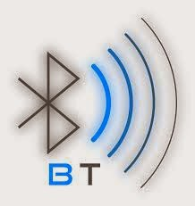
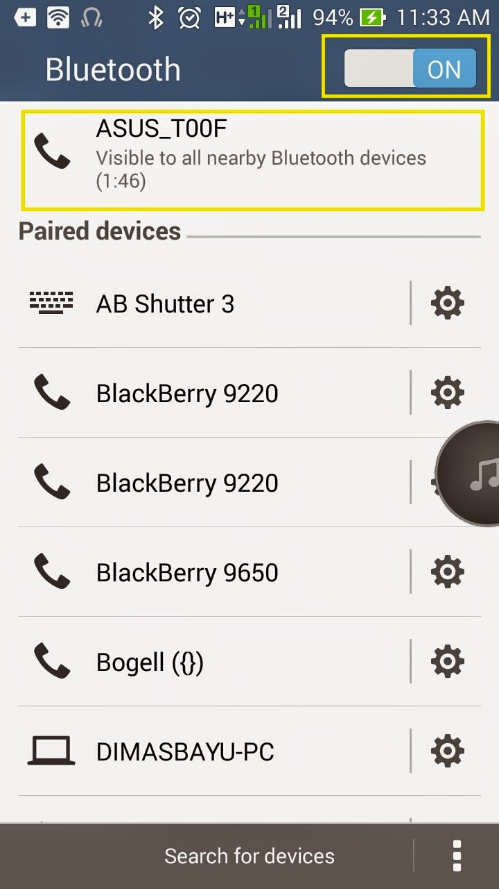
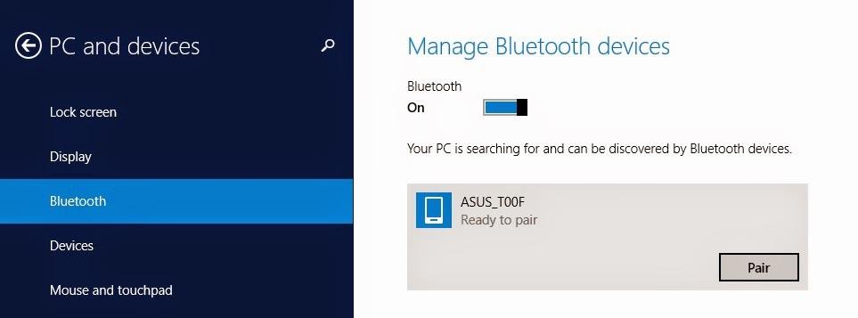
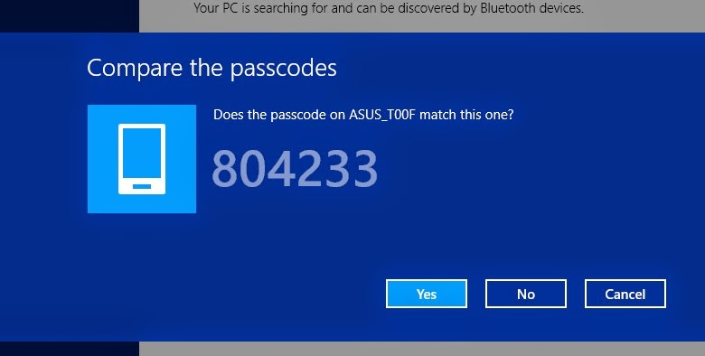
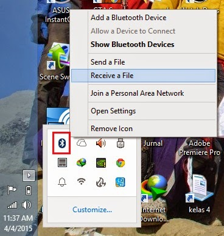
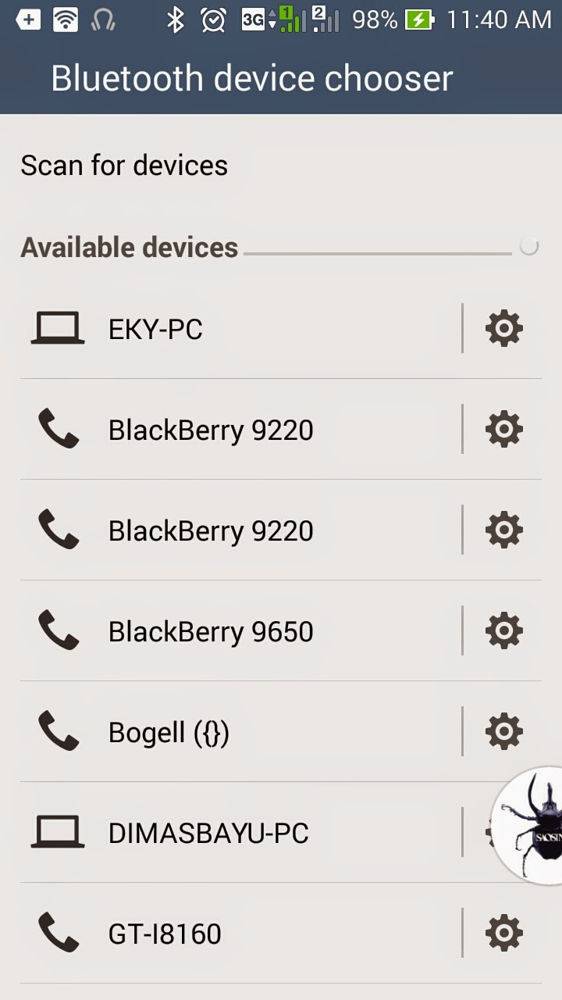

Mengirim File Dari Android ke Windows 8 Menggunakan Bluetooth
By Awaludin Siking
Mengirim file menggunakan Bluetooth antar perangkat mobile mungkin sudah sering anda lakukan. Namun untuk mengirim file dari HP ke Laptop / PC sering kali kita harus menggunakan kabel data. Bagaimana disaat kita ingin memindahkan file ke PC/Laptop dari HP namun kita tidak memiliki atau membawa kabel data ? Jika demikian maka kita dapat menggunakan perangkat Bluetooth untuk mengirim file tersebut. Berikut cara untuk mengirim file dari HP ke Windos 8 menggunakan Bluetooth.

1. Pastikan anda sudah menginstall driver bluetooth di Laptop anda.
2. Lakuakan Pairing antara HP dan Laptop dengan cara :
- Nyalakan bluetooth di android lalu Set Visible Android agar dapat terbaca oleh perangkat lain

- Masuk kepengaturan bluetooth pada Windows 8. Jika nama perangkat android sudah terbaca,
klik pair

- Kemudian klik yes jika terdapat notifikasi pada windows 8.

- Klik pair pada notifikasi di android.
- Tunggu hingga proses pairing selesai..
3. Klik pada try icon - klik kanan pada icon bluetooh - pilih receive a file

4. Pilih file yang akan di kirim pada android.
5. Kirim file ke perangkat bluetooh windows 8 yang telah terpasang.

6. Tunggu hingga proses pengiriman selesai. pilih lokasi direktori penyimpanan lalu klik ok.
7. File selesai dikirim.
Sekian Tutorial cara mengirim file dari android ke windows 8 menggunakan bluetooth. Jika ada pertanyaan silakan tanya di coment ya, terimakasih semoga bermanfaat

 Perbedaan Jaringan 3G dan 4G
Perbedaan Jaringan 3G dan 4G
 Jumlah Core dan Hubungannya dengan
Jumlah Core dan Hubungannya dengan Pengertian Subnetting IP Address
Pengertian Subnetting IP Address  Cara Mengatur Layar di Windows Saat
Cara Mengatur Layar di Windows Saat Pengertian dan Cara Defrag/Defragment
Pengertian dan Cara Defrag/Defragment  Macam macam file audio dan
Macam macam file audio dan  Apa itu Extreme Programming ?
Apa itu Extreme Programming ?